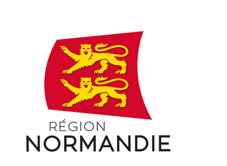

<div class="mat-toolbar dark" fxLayout="row" fxLayoutAlign="space-evenly stretch" fxLayout.lt-sm="column">
    <mat-list fxLayout="column" fxLayoutAlign="start">
        <h3 mat-list-item>Liens Utiles</h3>
        <a mat-list-item routerLink="/accueil">Accueil</a>
        <a mat-list-item routerLink="/commander">Commander</a>
        <a mat-list-item href="https://www.facebook.com/Zinzin-de-Sarrasin-105029095228697">Actualités</a>
        <a mat-list-item routerLink="/contact">Contact</a>
    </mat-list>
    <mat-list fxLayout="column" fxLayoutAlign="start">
        <h3 mat-list-item>Coordonnées</h3>
        <a mat-list-item>Patrick Brionne</a>
        <a mat-list-item>Le Cerisier</a>
        <a mat-list-item>61700 Champsecret</a>
        <a mat-list-item href="mailto:zinzindesarrasin@gmail.com">zinzindesarrasin@gmail.com</a>
        <a mat-list-item>06 82 92 28 38</a>
        <a mat-list-item id="facebook-link" href="https://www.facebook.com/Zinzin-de-Sarrasin-105029095228697"></a>
    </mat-list>
    <mat-list fxLayout="column" fxLayoutAlign="start" fxLayoutGap="10px">
        <h3 mat-list-item>Références</h3>
        <a mat-list-item>Ce projet est soutenu par la région Normandie et par le département de l'Orne</a>
        <div id="div-references" mat-list-item fxLayout="row" fxLayoutAlign="start center" fxLayoutGap="10px">
            <a class="lien-reference" href="https://normandie.fr/"></a>
            <a class="lien-reference" href="https://orne.fr/">
            </a>
        </div>
    </mat-list>
</div>
<div class="x-dark" fxLayout="row" fxLayoutAlign="center stretch">
    <p>&copy; Tous droits réservés. 2021 Zinzindesarrasin</p>
</div>